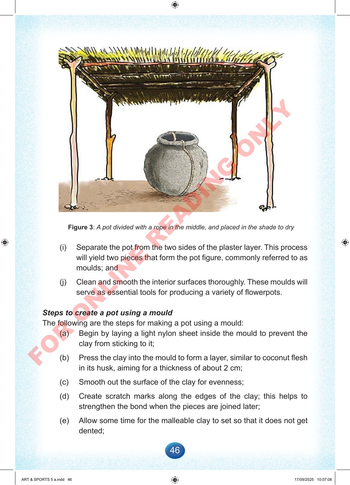

46
Figure
3:
A
pot
divided
with
a
rope
in
the
middle,
and
placed
in
the
shade
to
dry
(i)
Separate
the
pot
from
the
two
sides
of
the
plaster
layer.
This
process
will
yield
two
pieces
that
form
the
pot
figure,
commonly
referred
to
as
moulds;
and
(j)
Clean
and
smooth
the
interior
surfaces
thoroughly.
These
moulds
will
serve
as
essential
tools
for
producing
a
variety
of
flowerpots.
Steps
to
create
a
pot
using
a
mould
The
following
are
the
steps
for
making
a
pot
using
a
mould:
(a)
Begin
by
laying
a
light
nylon
sheet
inside
the
mould
to
prevent
the
clay
from
sticking
to
it;
(b)
Press
the
clay
into
the
mould
to
form
a
layer,
similar
to
coconut
flesh
in
its
husk,
aiming
for
a
thickness
of
about
2
cm;
(c)
Smooth
out
the
surface
of
the
clay
for
evenness;
(d)
Create
scratch
marks
along
the
edges
of
the
clay;
this
helps
to
strengthen
the
bond
when
the
pieces
are
joined
later;
(e)
Allow
some
time
for
the
malleable
clay
to
set
so
that
it
does
not
get
dented;
ART
&
SPORTS
5
a.indd
46
ART
&
SPORTS
5
a.indd
46
17/09/2025
10:07:08
17/09/2025
10:07:08
F
O
R
O
N
L
I
N
E
R
E
A
D
I
N
G
O
N
L
Y